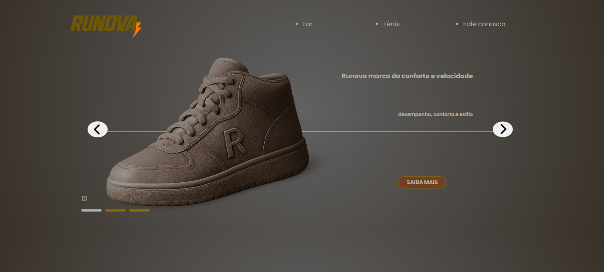
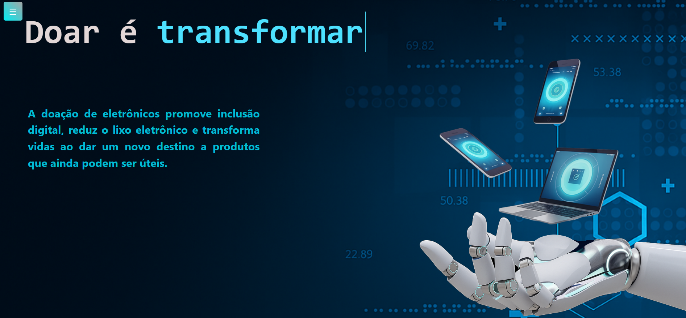
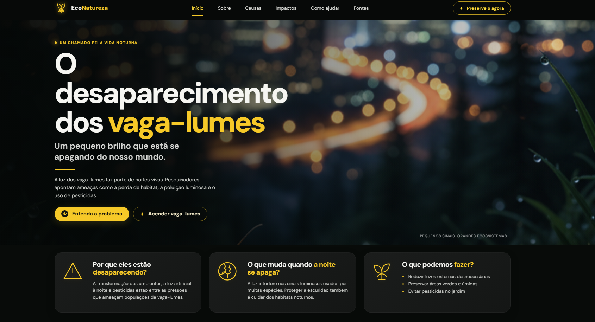
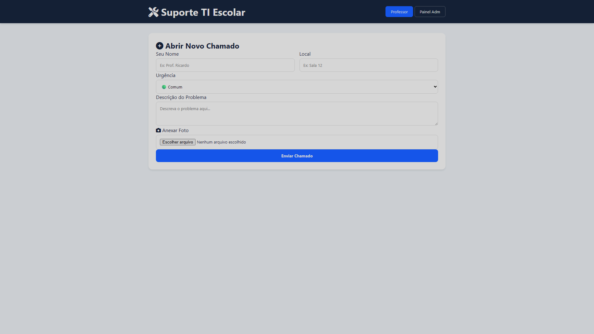
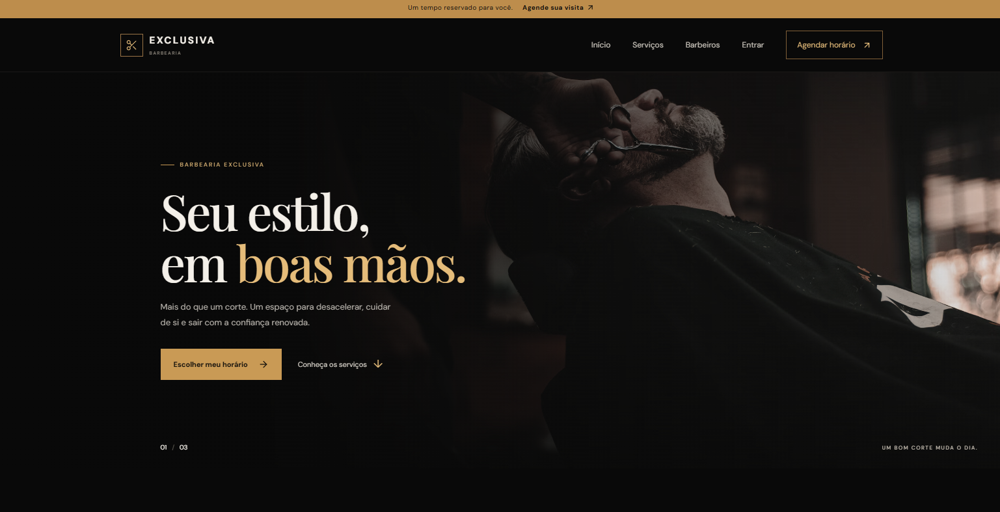
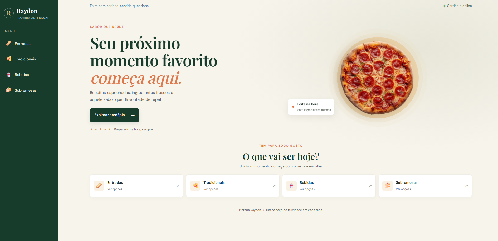
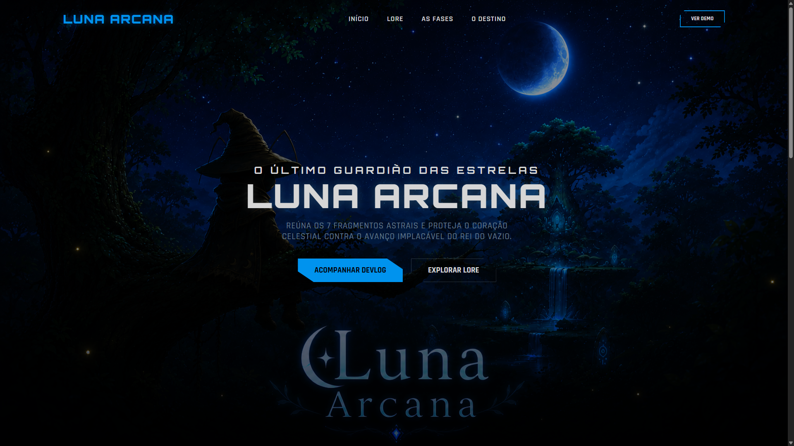
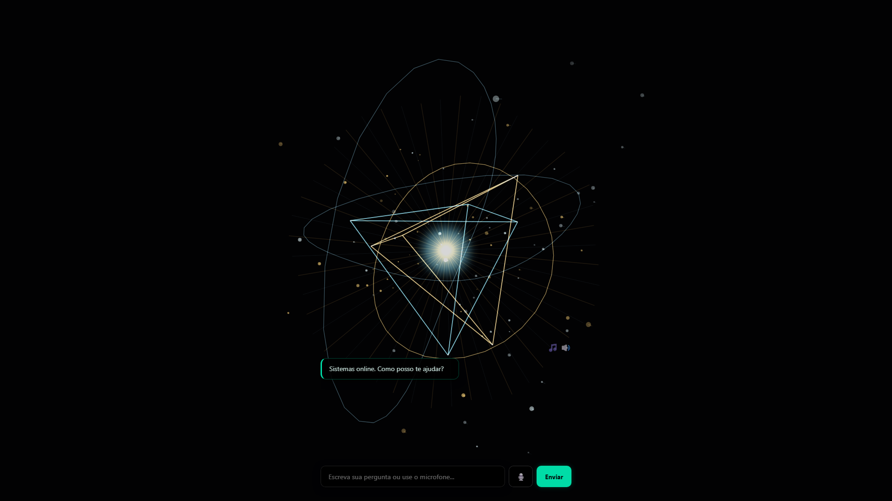

Vitrine de tênis
Objetivo: apresentar produtos de uma marca fictícia em uma página promocional.
O que pratiquei: estrutura de página, estilos e interações front-end.
Desenvolvedor front-end com foco em interfaces web. Crio páginas com HTML, CSS e JavaScript e estou ampliando meus conhecimentos em React e Node.js. Busco uma oportunidade para contribuir com uma equipe e continuar evoluindo na área.
Conheça minhas áreas de interesse e as tecnologias que uso nos meus projetos.
Crio sites personalizados, responsivos e otimizados, alinhando design moderno e funcionalidade para destacar sua presença online.
Desenvolvo soluções visuais que comunicam ideias de forma clara e impactante. Combinando criatividade e estratégia, crio identidades visuais, materiais promocionais e interfaces digitais que fortalecem a presença da marca e conectam-se ao público.
Sou um desenvolvedor interessado em criar soluções digitais funcionais e aprender construindo. Meus projetos pessoais me ajudam a praticar desenvolvimento web, explorar ideias visuais e desenvolver meu processo.
Estou em busca de uma oportunidade profissional para colaborar com uma equipe, contribuir com dedicação e crescer na área de tecnologia.
Confira o objetivo de cada projeto e acesse a demonstração ou o código disponível.

Objetivo: apresentar produtos de uma marca fictícia em uma página promocional.
O que pratiquei: estrutura de página, estilos e interações front-end.

Objetivo: aproximar quem pode doar equipamentos de quem precisa, promovendo inclusão digital.
O que pratiquei: apresentação de uma ideia de impacto social em um projeto web.

Objetivo: informar sobre ameaças aos vaga-lumes e a importância de preservar seus habitats.
O que pratiquei: organização de conteúdo e comunicação visual em uma página web.

Objetivo: organizar o registro e acompanhamento de solicitações de suporte técnico escolar.
O que pratiquei: desenvolvimento de uma aplicação web orientada a um fluxo de atendimento.

Objetivo: facilitar o agendamento de serviços em uma barbearia por meio de um site.
Área: aplicação web para serviços e agendamentos.

Objetivo: apresentar o cardápio de uma pizzaria artesanal e organizar as opções por categoria.
O que pratiquei: apresentação visual de produtos e navegação por seções do menu.
Demonstração e repositório em breve

Objetivo: apresentar um jogo em desenvolvimento com a engine Godot.
O que pratiquei: criação de uma página de apresentação para um projeto de game.
